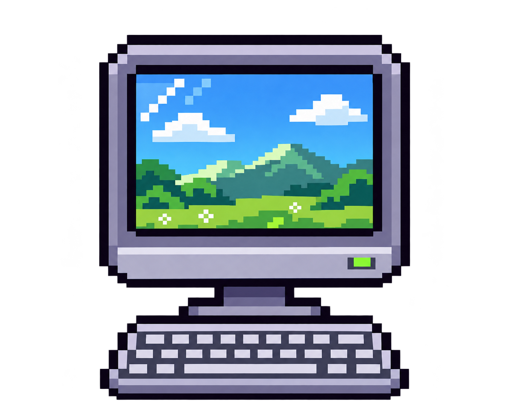

Présentation professionnel
Bonjour je m'appelle Ayoub j'ai 26 ans après avoir
eu une longue experience dans la grande distribution
j'ai décidé de me réorienter dans un domaine dans
lequel je veut m'épanouir.
Mes métiers de rêves serait dans l'idéal développeur d'application ou développeur web pour me permettre d'enrichir ma créativité
Lien vers mon Linkedin
Mes notions

J'ai quelques notions en HTML et CSS et j'aimerais trouver une entreprise qui pourrait m'embaucher en alternance pour pouvoir progresser dans ces langages et en apprendre d'autre en amont comme notament le javascript et python.
Pourquoi le domaine de l'informatique ?

J'ai eu mon première ordinateur jeune, je jouais a plusieurs jeu notamment un jeu qui avait du succès en France qui s'appelait Habbo, après de longue heures de jeu j'ai eu l'envie de crée mon propre rétro serveur que j'ai coder avec mes amis.
J'ai donc toucher aux HTML, CSS, MySQL, FileZila, Photoshop. J'ai eu donc eu l'envie de retrouver cette nostalgie de coder, faire du design et être fier de réaliser des projets J'ai donc récemment fait la piscine de l'école 42 qui était une expérience enrichisante.
Malheursement les projets que j'ai exporter sur Github ne peuvent pas être public par soucis de confidentialité. Et aujourd'hui je souhaite trouver une entreprise pour me prendre en alternance en tant que développeur.


Pourquoi moi ?
Je suis le genre de personne qui s'impliquera au maximum pour réaliser les projets qu'on me propose. Je pourrais notamment apporter du soutien créatif et pédagogique avec mes futurs collègues. De nature social, à l'écoute et empathique je pense pouvoir être un atout pour travailler dans les meilleurs conditions.